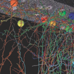
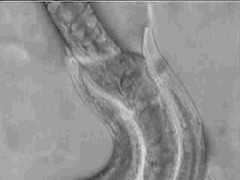

<section class="content">
  <table class="aligncenter" border="1">
		<tbody>
			<tr>
				<td>
					<a onclick="javascript:pageTracker._trackPageview('/outgoing/openconnecto.me/Bock11/');" title="Bock et al. (Nature) 2011"  href="http://openconnecto.me/Bock11/">Bock et al. (Nature) 2011</a><br />
					<a onclick="javascript:pageTracker._trackPageview('/outgoing/openconnecto.me/Bock11');" title="Bock et al. (Nature) 2011"  href="http://openconnecto.me/Bock11"> 
					</a>
				</td>
				<td>
					<a title="Kasthuri et al. 2011" href="http://openconnectomeproject.org/Kasthuri11/">Kasthuri et al. (unpublished) 2011</a><br />
					<a title="Kasthuri et al. 2011" href="http://openconnectomeproject.org/Kasthuri11/">
					</a></td>
				<td>
					<a onclick="javascript:pageTracker._trackPageview('/outgoing/openconnecto.me/catmaid/');" style="text-align: center;"  href="http://openconnecto.me/catmaid/">&nbsp; &nbsp;&nbsp;&nbsp;&nbsp;&nbsp;&nbsp;&nbsp;&nbsp;&nbsp;&nbsp;&nbsp;&nbsp;View our data now!</a><br />
					<a onclick="javascript:pageTracker._trackPageview('/outgoing/openconnecto.me/catmaid/');"  href="http://openconnecto.me/catmaid/">
					</a>
				</td>
			</tr>
			<tr>
				<td>
					<a title="Herm. C. elegans" href="http://openconnectomeproject.org/celegans/">Hermaphroditic C. elegans</a><br />
					<a href="http://openconnectomeproject.org/celegans/">
					</a>
				</td>
				
				<td style="text-align: center;">
					<a title="Male C. elegans" href="http://openconnectomeproject.org/male-c-elegans/">Male C. elegans</a><br />
					<a href="http://openconnectomeproject.org/male-c-elegans/">
					</a>
				</td>
				<td>
					<a title="1000 FCP" href="http://openconnectomeproject.org/1000fcp/">1000 Functional Connectome Project</a><br />
					<a title="1000 FCP" href="http://openconnectomeproject.org/1000fcp/">
					</a>
				</td>
			</tr>
		</tbody>
	</table>
</section>
